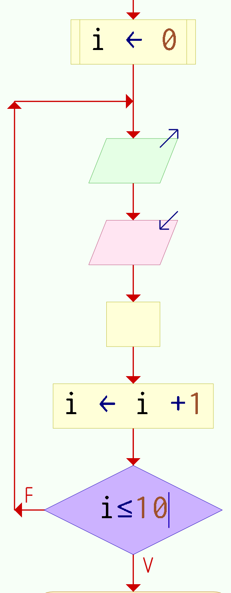

Semana 7
Estructura condicional:
Según (switch)
La estructura condicional if nos proporciona, únicamente dos resultados,
uno para cuando es verdadero y otro para cuando es falso. La estructura según,
por su parte nos permite elegir entre muchas opciones.
Características
- Esta estructura nos permite ejecutar una de entre un conjunto de alternativas,
con base en el valor almacenado en una variable de tipo númerico
llamada selector.
- No tiene sentido usar un selector para una variable como por ejemplo sexo ($1$; hombre, $2$: Mujer),
en este caso es más óptimo y eficiente la estructura selectiva $if$ pero para una variable como
carrera (1: 'Economía', 2: 'Turismo'. 3: 'Comunicación', 4:'Relaciones internacionales', 5: 'Actuaria')
es más recomendable usar un selector.
- El selector debe ser una variable que toma más de dos valores enteros $1, 2, 3 ,\ldots N$ y
dependiendo de ese valor se ejecute ciertas instrucciones.
- Se evalua el contenido del selector y se ejecuta la secuencia de instrucciones asociadas
con dicho valor.
- La secuencia de instrucciones ejecutada por una instrucción Según depende del valor de
una variable numérica.
- Cada opción está formada por uno o más números separados por comas.
- Opcionalmente, se puede agregar una opción final, llamada De otro modo, cuya secuencia
de instrucciones asociada se ejecutara sólo si el valor almacenado en la variable no coincide
con ninguna de las opciones anteriores.
Sintaxis sentencia según
En general, la sintaxis de la sentencia según es:
Donde selector es una variable de tipo númerico y $n_1,n_2,n_3,n_4,n_5, n_6$ son
valores que toma la variable selector
Enseguida se presenta un ejemplo más especifico sobre el uso de la sentencia según :
Práctica
Construye el diagrama de flujo de un algoritmo que solicite al usuario un
número entero $n \in \{0,1,2,3,4,5,6\}$ e imprima el nombre del día de la semana correspondiente.
Asume que $0$ corresponde a "Lunes" y $6$ a "Domingo", si en numero ingresa no pertenece al conjunto
$\{0,1,2,3,4,5,6\}$ imprimir el mensaje "El número ingresado no corresponde a un día de la semana"
Práctica
Construye el diagrama de flujo de un algoritmo que solicite al usuario un
número entero $n \in \mathbb{Z}$ y determine la clase de equivalencia módulo $7$ (Vea también relación de congruencia) a la que pertenece e
imprima el nombre del día de la semana correspondiente. Asume que $0$ corresponde a "Lunes" y
$6$ a "Domingo".
Práctica
Construye el diagrama de flujo de un algoritmo que solicite al usuario dos números
enteros $x,y$, calcule e imprima el valor de la función $f(x,y)$ bajo la
siguiente regla de correspondencia:
\begin{equation}f(x,y) :=
\begin{cases}
100x,& \text{ si } y=1, \\
100^x,& \text{ si } y=2, \\
x/100,& \text{ si } y=3, \\
0 ,& \text{ para cualquier otro valor de } y \\
\end{cases}
\end{equation}
Imprimir $f(x,y)= \text{valor_resultante}$
Práctica
Construye el diagrama de flujo de un algoritmo que lea tres números enteros y los imprima
en orden ascendente.
Práctica
Construye el diagrama de flujo de un algoritmo que solicite el salario de un profesor del SUNEO,
y calcule el incremento del salario de acuerdo con el siguiente criterio e imprima el nuevo salario
del profesor.
\begin{equation}
\begin{cases}
Salario < \$12\,000,& \text{ Incremento del } 15\%. \\
\$12\,000 \leq Salario < \$15\,000,& \text{ incremento del } 12\%. \\
\$15\,000 \leq Salario < $18\,000,& \text{ incremento del } 8\%. \\
$18\,000 \leq Salario,& \text{ incremento del } 5\%.\\
\end{cases}
\end{equation}
Práctica
Construye el diagrama de flujo de un algoritmo que reciba los coeficientes $a,b,c$ de una ecuación cuadratica:
$ax^2 + bx +c$ y determine si tiene si tiene dos soluciones reales, una solución real o bien ninguna solución real.
Hint: Utiliza el discrminante de la ecuación cuadrática.
Práctica
En la compañía telefónica “chismefón”. Cuando
se realiza una llamada, el cobro es por el tiempo que ésta dura, de tal
forma que los primeros cinco minutos cuestan $\$1.00$ cada minuto, los siguientes
tres, $\$80$ centavos cada minuto, los siguientes dos minutos, $\$70$ centavos
cada uno, y despues del décimo minuto, $\$50$ centavos cada minuto.
Además, se carga un impuesto sobre el monto por la duración de la llamada del $3\%$ cuando es domingo,
y en cualquier otro día, en turno matutino, se aplica un impuesto del $15 \%$ , y en turno vespertino del
$10\%$ sobre el monto a pagar por la duración de la llamada. Construye el diagrama de flujo
de un algoritmo que solicite el número de minutos que duro la llamada, el día que se realizo
y si fue hecha en el turno matutino o vespertino, luego determine cuánto debe pagar
por cada concepto una persona que realiza una llamada e imprima el pago total.
Estructuras de repetición:
Mientras (while), repetir-hasta (do-while),
para (for)
Ciclo mientras (While) y ciclo para (for)
En los ciclos mientras y para la condición se evalua antes de ingresar al bucle y si esta es verdadera
entonces ingresa al ciclo en caso contrario se sale. Por lo que si la condición es inicialmente falsa, el bucle no
se ejecuta ninguna vez. Para ambos casos, el bucle se repite mientras la condición sea verdadera.
Sintaxis ciclo mientras (While)
La el ciclo mientras ejecuta una secuencia de instrucciones mientras una condición sea verdadera.
Si la condición resulta verdadera, se ejecuta una vez la secuencia de instrucciones que forman el
cuerpo del ciclo. Al finalizar la ejecución del cuerpo del ciclo se vuelve a evaluar la condición y,
si es verdadera, la ejecución se repite. Estos pasos se repiten mientras la condición sea verdadera
Las instrucciones del cuerpo del ciclo pueden no ejecutarse nunca, si al evaluar por primera vez
la condicón resulta ser falsa.
Si la condición siempre es verdadera, al ejecutar esta instrucción se produce un ciclo infinito.
A fin de evitarlo, las instrucciones del cuerpo del ciclo deben contener alguna instrucción que modifique la o las variables involucradas en la condición,
de modo que ésta sea falso en algún momento y así terminar la ejecución del ciclo.
Sintaxix ciclo repetir-hasta
En el ciclo repetir-hasta la condición se evalua despues de la ejecución del ciclo.
Por lo que, el ciclo siempre se ejecuta por lo menos una vez. El ciclo se repite hasta que
la condición sea verdadera.

La secuencia de instrucciones que forma el cuerpo del ciclo se ejecuta una vez y luego se evalúa
la condición. Si la condición es falsa, el cuerpo del ciclo se ejecuta nuevamente y se vuelve a
evaluar la condición. Esto se repite hasta que la condición sea verdadera. Note que, dado que la condición se evalúa al final,
las instrucciones del cuerpo del ciclo serán ejecutadas al menos una vez.
A fin de evitar ciclos infinitos, el cuerpo del ciclo debe contener alguna instrucción que modifique
la o las variables involucradas en la condición de modo que en algún momento la condición sea verdadera y
se finalice la ejecución del ciclo.
Sintaxix ciclo para (for)
La instrucción para ejecuta una secuencia de instrucciones un número determinado de veces.
Al ingresar al bloque, la variable $i$ recibe el valor inicial $0$ y se ejecuta la secuencia de instrucciones
que forma el cuerpo del ciclo. Luego se incrementa la variable $i$ en $1$ y se evalúa si el valor almacenado
en $i$ es mayor que $10$. Si esto es falso se repite hasta que $i$ sea mayor que $10$.
Práctica
Construye el diagrama de flujo de un algoritmo que sume los $50$ primeros números naturales.
Práctica
Construye el diagrama de flujo de un algoritmo que solicite al usuario un número entero positivo $n$
y determine e imprima la suma de los primeros $n$ números naturales.
Práctica
Construye el diagrama de flujo de un algoritmo que determine e imprima la suma:
$$3 + 6 + 9 + \cdots + 99.$$
Práctica
Construye el diagrama de flujo de un algoritmo que solicite al usuario un número entero positivo $n$,
y determine e imprime el factorial de $n$.